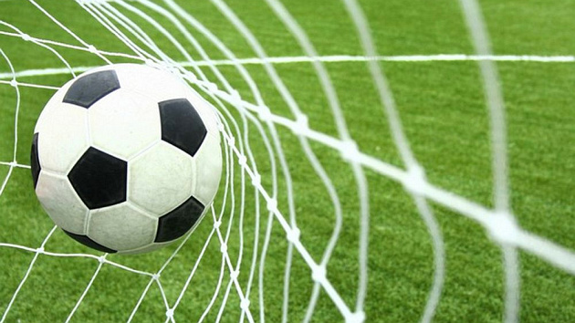

Nogomet je sport u kojemu se dvije momčadi od 11 igrača nadmeću na pravokutnom igralištu travnate površine.
Cilj igre jest postizanje više pogodaka od protivničke momčadi bilo kojim dijelom tijela osim rukom.
Vratar je jedini igrač kojemu je dozvoljeno igrati i zabiti gol rukama, doduše samo unutar jasno označenog pravokutnika ispred vlastitih vrata.
Svim igračima dopušteno je proizvoljno kretanje po terenu, iako pravilo zaleđa ograničava napadačke kretnje ovisno o položaju lopte i protivničke obrane.
